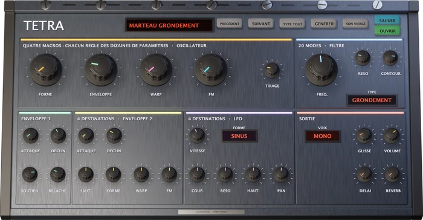
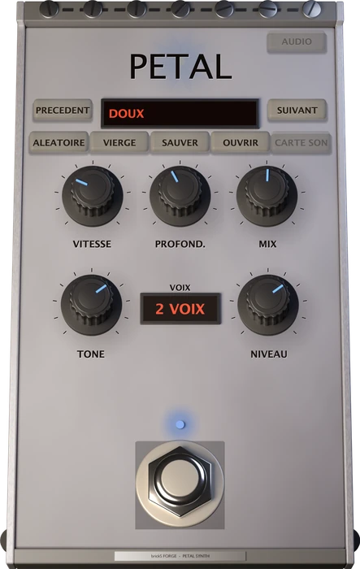
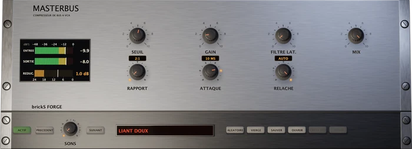
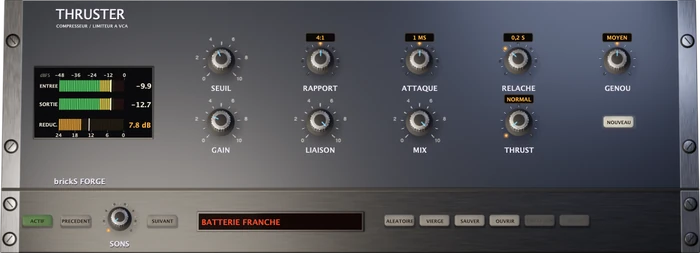
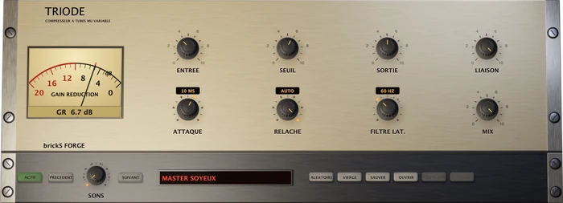
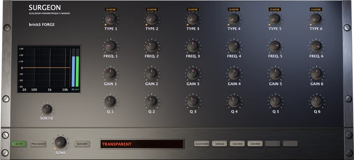
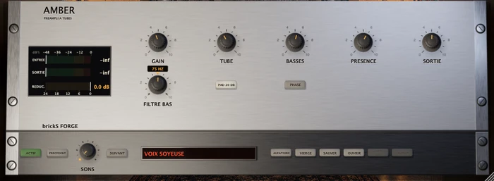

Le catalogue
Tous les plug-ins
Audio Unit et VST3 pour Mac. Cliquez sur un plug-in pour le découvrir.
 NEREIDSynthétiseur à faders · filtre 24 dBSynthés
NEREIDSynthétiseur à faders · filtre 24 dBSynthés NIMBUSSynthétiseur de textures · 3 moteurs, enregistreur d'entréeSynthés
NIMBUSSynthétiseur de textures · 3 moteurs, enregistreur d'entréeSynthés OBSIDIANSynthétiseur polyphonique 8 voix · filtre à variable d'étatSynthés
OBSIDIANSynthétiseur polyphonique 8 voix · filtre à variable d'étatSynthés ORGANONSynthétiseur à modélisation physique · instruments du monde entierSynthés
ORGANONSynthétiseur à modélisation physique · instruments du monde entierSynthés PRISMSynthétiseur FM · 4 opérateurs, 8 algorithmesSynthés
PRISMSynthétiseur FM · 4 opérateurs, 8 algorithmesSynthés TITANSynthétiseur polyphonique bicanal · 8 voix · huit macrosSynthés
TITANSynthétiseur polyphonique bicanal · 8 voix · huit macrosSynthés FLUXSynthé d’effets spéciaux · matière solide, liquide, gazeuseSynthés
FLUXSynthé d’effets spéciaux · matière solide, liquide, gazeuseSynthés
TETRAPetit synthé · quatre macros chaotiquesSynthés BASALTSynthétiseur de basse · 3 oscillateurs, filtre à échelleBasses
BASALTSynthétiseur de basse · 3 oscillateurs, filtre à échelleBasses VIPERSynthétiseur à deux filtres en série · modulateur en anneauBasses
VIPERSynthétiseur à deux filtres en série · modulateur en anneauBasses ANVIL BASSMoteur de basse monophoniqueBasses
ANVIL BASSMoteur de basse monophoniqueBasses CHOP-CORESampler de découpe · padsBoîtes à rythmes
CHOP-CORESampler de découpe · padsBoîtes à rythmes NERVE-COREBoîte à rythmes à circuits 808, 909 et 707 · moteur ouvertBoîtes à rythmes
NERVE-COREBoîte à rythmes à circuits 808, 909 et 707 · moteur ouvertBoîtes à rythmes PULSE-CORESampler de pads · un dossier par padBoîtes à rythmes
PULSE-CORESampler de pads · un dossier par padBoîtes à rythmes SPARK BOXBoîte à rythmes à synthèse · 6 parties, résonateurBoîtes à rythmes
SPARK BOXBoîte à rythmes à synthèse · 6 parties, résonateurBoîtes à rythmes POLLENSynthétiseur granulaireGranulaire
POLLENSynthétiseur granulaireGranulaire CARILLONModulateur en anneau à diodesModulation
CARILLONModulateur en anneau à diodesModulation CHOIREffet de chœur · 1 à 24 voixModulation
CHOIREffet de chœur · 1 à 24 voixModulation DIMENSIONChorus de studio à quatre modesModulation
DIMENSIONChorus de studio à quatre modesModulation DRIFTChorus de synthé vintageModulation
DRIFTChorus de synthé vintageModulation ENSEMBLEChorus d'ensemble à cordesModulation
ENSEMBLEChorus d'ensemble à cordesModulation HELIXPhaseur de 4 à 12 étagesModulation
HELIXPhaseur de 4 à 12 étagesModulation MOSAICRéseau de huit filtres à motifsModulation
MOSAICRéseau de huit filtres à motifsModulation
PETALChorus et vibrato compactsModulation SWARMChorus et flanger à grappeModulation
SWARMChorus et flanger à grappeModulation TWINSDoubleur de voixModulation
TWINSDoubleur de voixModulation VERTIGOPédale stéréo · ping-pong, orbite, essaimModulation
VERTIGOPédale stéréo · ping-pong, orbite, essaimModulation ABYSSRéverbe de studio · réseau de seize lignesRéverbes
ABYSSRéverbe de studio · réseau de seize lignesRéverbes AURORARéverbe de scintillement · octave et quinteRéverbes
AURORARéverbe de scintillement · octave et quinteRéverbes COILRéverbe à ressort et delay de bandeRéverbes
COILRéverbe à ressort et delay de bandeRéverbes LUCIDRéverbe transparenteRéverbes
LUCIDRéverbe transparenteRéverbes NAVERéverbe chaude · grande nefRéverbes
NAVERéverbe chaude · grande nefRéverbes SHEETRéverbe à plaqueRéverbes
SHEETRéverbe à plaqueRéverbes SLAMROOMRéverbe à porte, inverse et rampeRéverbes
SLAMROOMRéverbe à porte, inverse et rampeRéverbes TIDALRéverbe synchronisée au tempoRéverbes
TIDALRéverbe synchronisée au tempoRéverbes ZENITHRéverbe à douze machinesRéverbes
ZENITHRéverbe à douze machinesRéverbes BUCKETDelay analogique à puces à seauxDélais
BUCKETDelay analogique à puces à seauxDélais CHRONOSDelay à douze machinesDélais
CHRONOSDelay à douze machinesDélais HORIZONDelay de studio · 20 ms à 12 sDélais
HORIZONDelay de studio · 20 ms à 12 sDélais PEBBLEDelay analogique compactDélais
PEBBLEDelay analogique compactDélais CRUNCHOverdrive à diodesFiltres et distorsions
CRUNCHOverdrive à diodesFiltres et distorsions FERALOscillateur commandé par le signalFiltres et distorsions
FERALOscillateur commandé par le signalFiltres et distorsions MANGLEDestruction · crush, fuzz, porteFiltres et distorsions
MANGLEDestruction · crush, fuzz, porteFiltres et distorsions REELSaturation de bande magnétiqueFiltres et distorsions
REELSaturation de bande magnétiqueFiltres et distorsions SLUICEFiltre passe-bas à échelle, à enveloppeFiltres et distorsions
SLUICEFiltre passe-bas à échelle, à enveloppeFiltres et distorsions TWISTReplieur d'ondeFiltres et distorsions
TWISTReplieur d'ondeFiltres et distorsions WARMTHSaturation douce · tube, transformateur, bandeFiltres et distorsions
WARMTHSaturation douce · tube, transformateur, bandeFiltres et distorsions COSMOSLooper granulaire · 11 modesLooper et textures
COSMOSLooper granulaire · 11 modesLooper et textures ORBITLooper, grains et espaceLooper et textures
ORBITLooper, grains et espaceLooper et textures CROSSFIRECompresseur multibande · 5 bandesCompresseurs
CROSSFIRECompresseur multibande · 5 bandesCompresseurs DYNAMOCompresseur numérique · 8 stylesCompresseurs
DYNAMOCompresseur numérique · 8 stylesCompresseurs GRIPPERCompresseur à VCACompresseurs
GRIPPERCompresseur à VCACompresseurs HEAVYWEIGHTCompresseur à bande et transformateurCompresseurs
HEAVYWEIGHTCompresseur à bande et transformateurCompresseurs IRONCLADCompresseur-limiteur stéréo à transformateursCompresseurs
IRONCLADCompresseur-limiteur stéréo à transformateursCompresseurs LUMENCompresseur optique à tubesCompresseurs
LUMENCompresseur optique à tubesCompresseurs
MASTERBUSCompresseur de bus à VCACompresseurs OMNIFORCEProcesseur de dynamique · de l'expansion à l'inversionCompresseurs
OMNIFORCEProcesseur de dynamique · de l'expansion à l'inversionCompresseurs PIRANHALimiteur-compresseur à FETCompresseurs
PIRANHALimiteur-compresseur à FETCompresseurs RAVAGERCompresseur à neuf rapportsCompresseurs
RAVAGERCompresseur à neuf rapportsCompresseurs
THRUSTERCompresseur-limiteur à VCACompresseurs
TRIODECompresseur à mu variable et tubesCompresseurs BRICKWALLLimiteur de mastering · crête vraieLimiteurs
BRICKWALLLimiteur de mastering · crête vraieLimiteurs MONOLITHLimiteur à transformateursLimiteurs
MONOLITHLimiteur à transformateursLimiteurs APEXOutil de mastering à trois bandesMastering
APEXOutil de mastering à trois bandesMastering CHROMAÉgaliseur à couleurs · 4 bandesÉgaliseurs
CHROMAÉgaliseur à couleurs · 4 bandesÉgaliseurs CONSOLEQÉgaliseur de console · 4 bandesÉgaliseurs
CONSOLEQÉgaliseur de console · 4 bandesÉgaliseurs KALEIDOÉgaliseur à couleurs · 8 bandesÉgaliseurs
KALEIDOÉgaliseur à couleurs · 8 bandesÉgaliseurs LIFTERÉgaliseur de programme à tubesÉgaliseurs
LIFTERÉgaliseur de programme à tubesÉgaliseurs PUNCHEQÉgaliseur à cartes · Q proportionnelÉgaliseurs
PUNCHEQÉgaliseur à cartes · Q proportionnelÉgaliseurs
SURGEONÉgaliseur paramétrique · 6 bandesÉgaliseurs IRONBOXPréampli de micro et égaliseur à transformateursPréamplis
IRONBOXPréampli de micro et égaliseur à transformateursPréamplis
AMBERPréampli à tubes de studioPréamplis BRASSPréampli d'enregistrement · trois couleursPréamplis
BRASSPréampli d'enregistrement · trois couleursPréamplis CRYSTALPréampli transparentPréamplis
CRYSTALPréampli transparentPréamplis EMBERPréampli à tubes d'époquePréamplis
EMBERPréampli à tubes d'époquePréamplis GRITPréampli saturé · lo-fiPréamplis
GRITPréampli saturé · lo-fiPréamplis IRONHEARTPréampli de console britanniquePréamplis
IRONHEARTPréampli de console britanniquePréamplis SLEDGEPréampli à circuit discretPréamplis
SLEDGEPréampli à circuit discretPréamplis